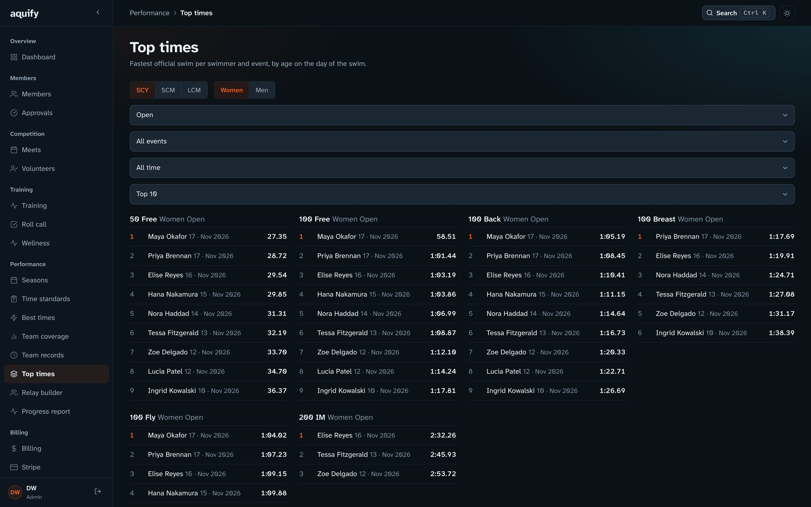
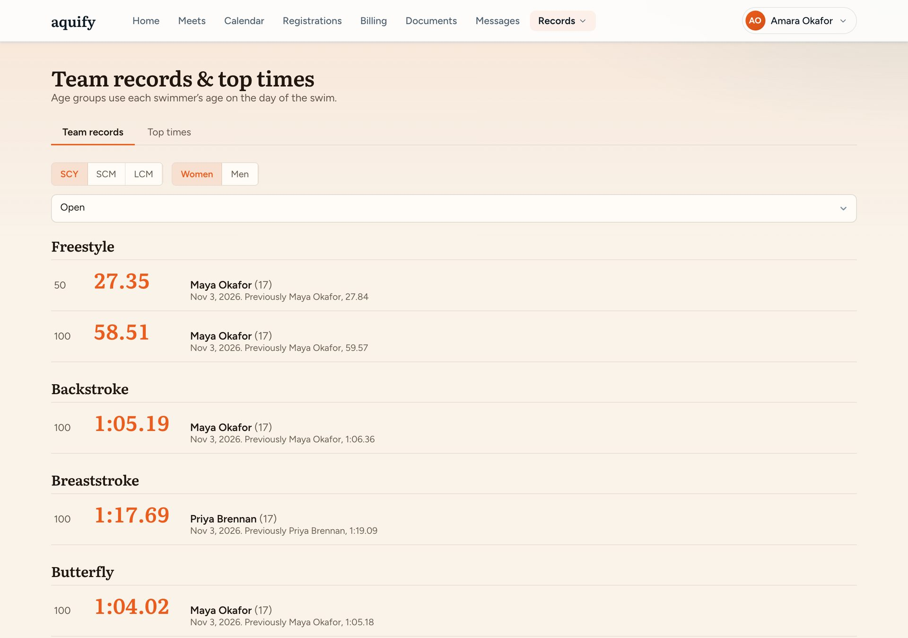

Every swim, remembered.
Best times, cuts, records and goals, built from the meets you already swim.

Best time for every eventFor every swimmer, updated after every meet.
Where it came fromImported result or entered by hand.
Search any swimmerFilter by distance or stroke.
Import the results. Best times update. Records are checked. Swimmers see how close they are to the next cut.
What happens when results come in.
1Best times refreshEach swimmer’s best in each event updates the moment the file is imported.
2Records are checkedaquify compares every swim with the club record for that age group, stroke and course, and tells you which ones were broken.
3Top times by ageSee the fastest swims in the club for any event and age group, any time of the year.
4Swimmers see the next cutPick a time standard and each swimmer sees whether they have made it, and how far they have to go.




Records by age group, with the whole history behind each one.

Everyone sees how fast the club is.
Parents and swimmers get the same record board and top-times list. Age groups use the swimmer’s age on the day of the swim.
- Protect a record, and a faster swim waits for an admin to approve.
- Add historical records from before you used aquify.
- Time standardsAdd cuts for championships or club goals, or import them from a file.
- GoalsCoaches, parents and swimmers can set a time goal and track it.
- Progress reportSee how much faster a group got between two dates.
- Relay builderSuggests the fastest four from best times, for medley and free relays.
- Course awareShort course yards, short course meters and long course stay separate.
Ready when your club is.
We’re opening aquify to clubs in order. Leave your email and we’ll tell you when it’s your turn.
Join the waitlist